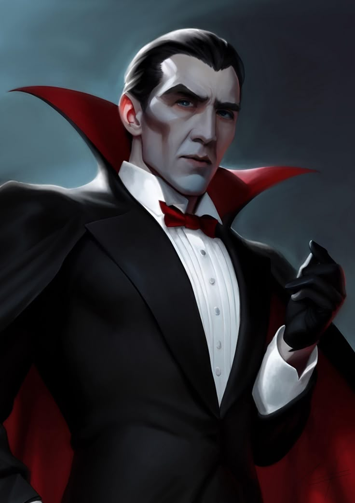

Dracula


Published in 1897, Bram Stoker’s Dracula stands as the definitive masterpiece of Victorian Gothic fiction. Unlike traditional narratives, Stoker employs an epistolary structure—a complex montage of diary entries, telegrams, ship's logs, and newspaper clippings. This technique functions as a "found footage" device, grounding the supernatural horror in a sense of harrowing realism and objective documentation, which heightens the suspense for the reader.
The character of Count Dracula is famously linked to the 15th-century Prince of Wallachia, Vlad III, also known as Vlad Tepes (the Impaler). While Stoker’s portrayal is largely a work of fiction, he drew significant inspiration from the brutal reputation of the historical "Dracula" (meaning "Son of the Dragon"). This historical anchoring transforms the Count from a mere ghost into an ancient, aristocratic predator with a lineage rooted in Eastern European bloodletting.
The plot follows the harrowing journey of Jonathan Harker to the Carpathian Mountains, where he discovers the Count’s true nature. As Dracula migrates to London—the heart of the British Empire—to seek "new blood," he represents an invasive force from the East. The narrative culminates in a desperate crusade led by the polymath Professor Abraham Van Helsing, representing a clash between ancient superstition and modern Victorian rationality.
Dracula is depicted as an un-dead entity with near-omnipotent capabilities and crippling limitations:
- Preternatural Abilities: He possesses the power of therianthropy (transforming into wolves or bats), command over the elements (fog and storms), and superhuman physical strength.
- Arcane Weaknesses: His existence is governed by rigid occult laws. He is repelled by apotropaics such as garlic and crucifixes, and he loses his shapeshifting abilities during daylight
- Metaphysical Destruction: Termination of his existence requires a specific ritual: a wooden stake through the heart, followed by decapitation to ensure the soul's release.
Beyond the horror, Dracula serves as a profound social commentary. Academics often interpret the Count through various lenses:
- Xenophobia: He represents the Victorian fear of "Reverse Colonialism"—the idea of a primitive outsider infiltrating and "infecting" civilized London.
- Scientific Progress: The use of phonographs, blood transfusions, and typewriters in the novel highlights the tension between medieval folklore and modern science.
- Sublimated Desires: The act of blood-drinking is frequently analyzed as a metaphor for repressed Victorian sexuality and the fear of blood-borne contamination.
The impact of Dracula on global culture is immeasurable. Stoker effectively codified the modern vampire mythos.
- Cinematic Evolution: From the expressionist Nosferatu (1922) to the aristocratic portrayal by Bela Lugosi (1931), the Count has been reimagined in hundreds of films.
- Literary Progenitor: The novel paved the way for the "Vampire Romances" of the 21st century, shifting the monster from a repulsive cadaver to a tragic, sophisticated anti-hero.
If you found this information helpful, please use the link below to visit our YouTube channel. Subscribe and support us to help us continue creating more content like this.
- Infinity Thinkers Laboratory